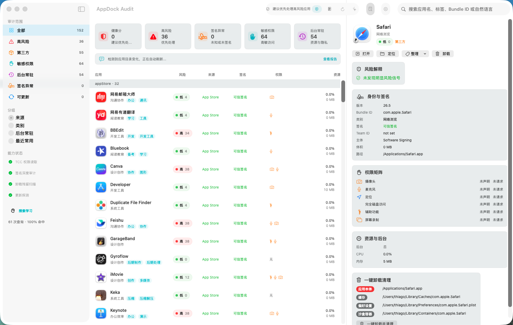
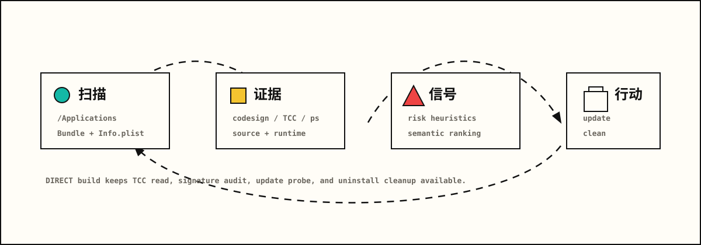

扫描
读取常见 Applications 路径，识别系统、App Store 和第三方应用。
AI-Native macOS Audit Engine
把 Mac 上的应用清单、来源、签名、权限、后台占用和更新线索整理成一张可查询的审计桌面。

App Dock 的主流程不是单纯列应用，而是把系统扫描结果压成可排序、可解释、可继续操作的证据链。

读取常见 Applications 路径，识别系统、App Store 和第三方应用。
合并签名、TCC 状态、Info.plist 权限声明、CPU 和内存占用。
输出风险解释、更新建议、语义检索结果和卸载清理候选项。
左侧是审计范围和分组，中心是应用资产表，右侧展开单个应用的身份、签名、权限矩阵和资源证据。
区分系统、App Store、第三方来源，调用 codesign 提取 Team ID、签名主体和信任等级。
读取 Info.plist 与 TCC 状态，并标记未签名、后台常驻加高敏权限、异常资源占用等信号。
语义查询先在本地做意图、标签、别名和反馈排序，再把必要摘要交给兼容 OpenAI 的模型。
先预览应用本体和 Library 残留，再以废纸篓语义执行清理；DIRECT 构建可处理受保护路径。
同一套代码可以构建为完整 DIRECT 版本，或构建为受限 MAS 版本，把敏感能力关进明确的策略表。
Developer Preview
公开预览版已经完成 Developer ID 签名、公证和 stapling。若 GitHub Release 已发布，页面会读取 Release asset 的真实下载次数；否则先使用站点 downloads 目录中的 DMG。